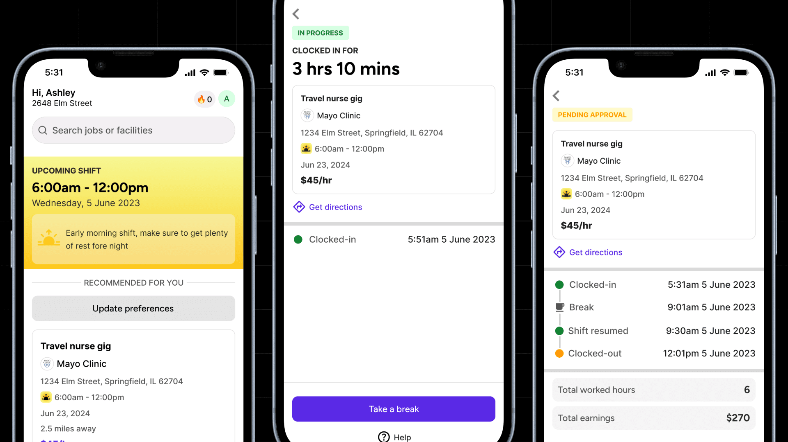
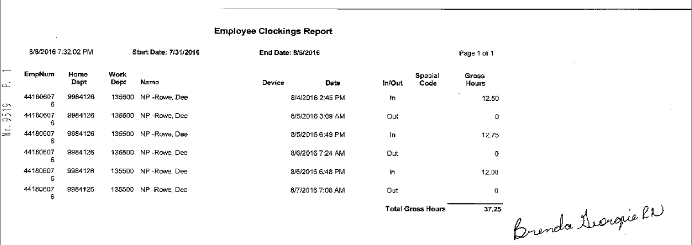
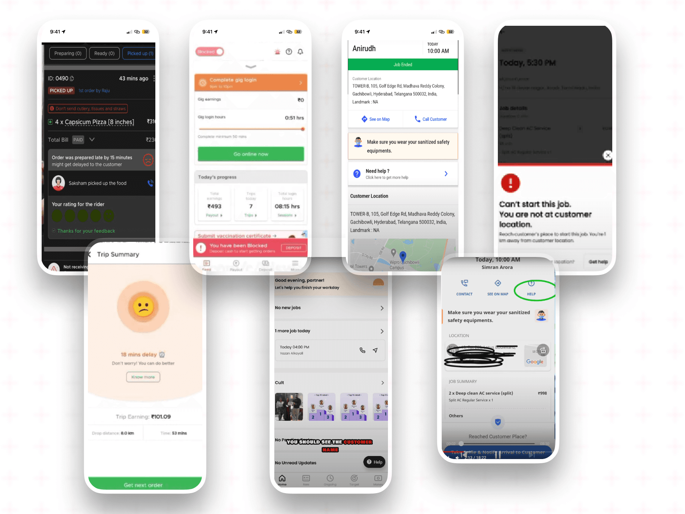
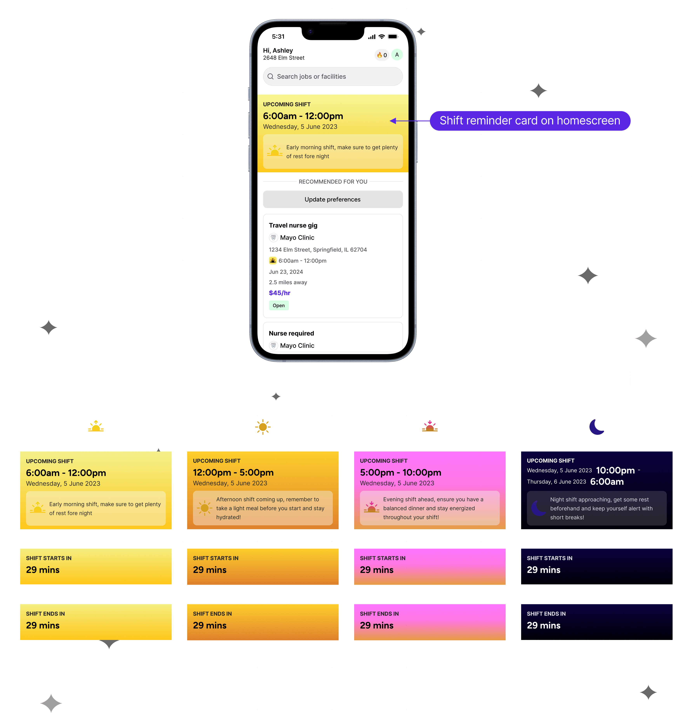
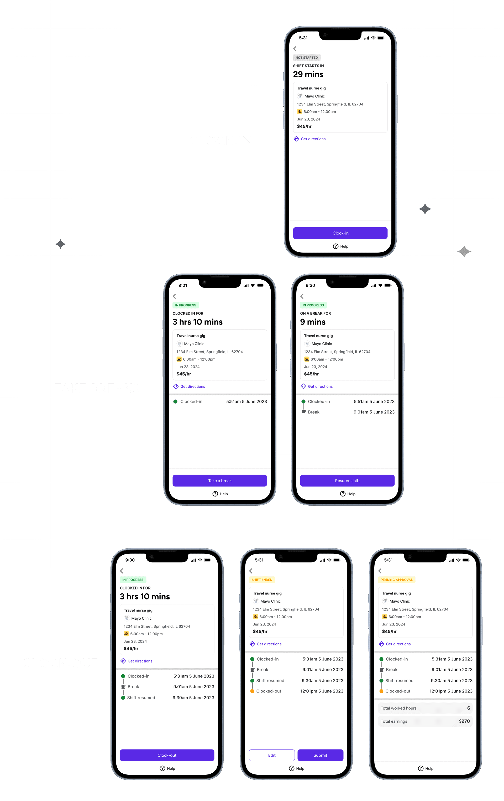
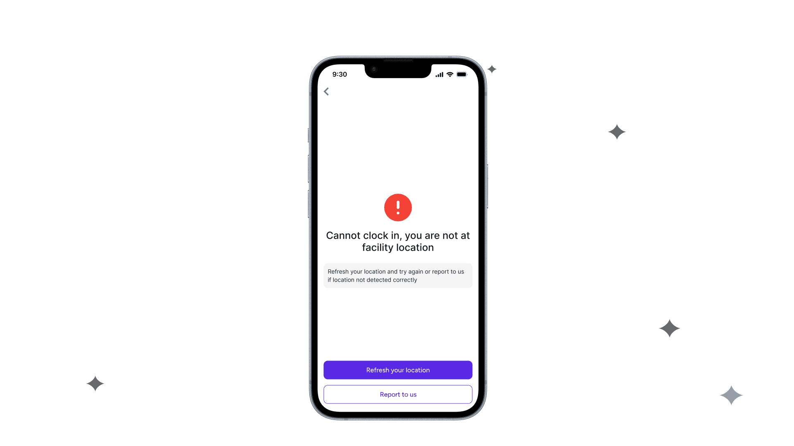

Astryl Shifts
Shift attendance and time tracking for nurses

Note: I have documented, rebranded and improvised this case study to meet the NDA.
Overview
As a UX designer for Astryl, I helped design a new shift time tracking feature for nurses.
Context
The company and the project
- The company
- Astryl is a healthcare recruitment product solutions company. Their aim is to digitize all parts of the workforce recruitment and management process for healthcare.
- The project
- “Shifts” is a new project for creating a streamlined and automated scheduling workflow to help healthcare facilities fill quick staffing jobs. My role was to take care of the shift management from the nurses’ end of the app.
Scoping
Where nurses’ time goes missing
Nurses working on temporary shifts are not recognized as full-time employees, so they are not put on facility clocks for attendance tracking.
Currently, nurses use paper timesheets for submission of their attendance and work hours.
The biggest priority of my task was creating the clock-in and clock-out experience for nurses on our app.
How might we design a seamless and efficient journey for nurses to clock in and clock out for their shifts?
Research
1 · Current journey
We interviewed a few temp-shift-working nurses to see how they currently filled timesheets.
- Go to the facility reception, provide ID, and fill in their details in the registry.
- Ask for a timesheet.
- Write the check-in time before beginning the shift.
- During breaks, get back to the reception and note the break.
- After finishing work, at shift end time, come back to the reception and write the time. Along with this they needed the manager’s sign-off for successful submission.
- The manager would then upload these details in the hospital management system and the approved timesheet would get processed for payroll.

2 · Benchmarking
We tried to gain some insights from gig-economy industry partner apps like Swiggy, Zomato and Urban Company, as these also had factors of time, location and gig completion underlying their scope.

Designs
Home screen

The clock-in and clock-out happy flow

Refining the designs
How can we ensure that the nurse is actually at the facility and working?
Designing the happy flow, we noticed some gaps that needed to be thought over.
To tackle this question, we decided to enable clocking in based on location validation. If the user’s location is not at the facility, the clock-in feature will not work and will throw an error.

The outcome
This app is not launched in public. We are still testing the usability of all our features on the staging application.
We got positive feedback from the nurses using the application.